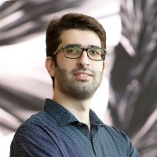
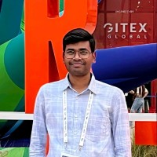
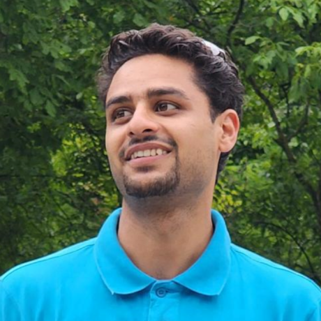

Agent-X
A benchmark and framework for evaluating deep multimodal reasoning in vision-centric agentic tasks.
Faculty / Computer Vision
Assistant Professor of Computer Vision
Mohamed bin Zayed University of Artificial Intelligence
Research in grounded large multimodal models, visual reasoning, and efficient, trustworthy AI for healthcare, agriculture, Earth observation, and Arabic cultural understanding.
Rao Muhammad Anwer is an Assistant Professor of Computer Vision at the Mohamed bin Zayed University of Artificial Intelligence (MBZUAI).
His research develops semantically enriched large multimodal models that connect language with visual evidence, alongside efficient and trustworthy AI. Applications span healthcare, agriculture, Earth observation, and Arabic language and cultural understanding. He has published more than 130 scientific papers and holds seven granted U.S. patents.
Before joining MBZUAI, he was a Research Scientist at the Inception Institute of Artificial Intelligence in Abu Dhabi. Earlier, he was a postdoctoral researcher at Aalto University under Finland’s Centre of Excellence in Computational Inference Research.
Research, teaching, and service highlights. Updated November 2026.
Our work on self-evolving multimodal understanding and generation uses self-consistency rewards. Read the paper ↗
“Perception Before Supervision” develops self-contained visual distillation; “CoVR-R” studies reason-aware composed video retrieval. Browse publications →
Senior Program Committee, AAAI 2027; Area Chair, WACV 2027; Program Chair, ACM Multimedia Asia 2028; and Workshop Chair, ACCV 2028.
“Think Before You Segment” appears at AAAI; “Thinking Beyond Labels” at CVPR; and “Paying More Attention to Visual Tokens” and “Ground3D-LMM” at ECCV.
Two projects on multisensor Earth-observation foundation models and vision-centric agentic reasoning appear at ICLR 2026.
DuwatBench appears in ACL Findings, while ARB and AgriChain appear at LREC 2026.
MedROV appears at WACV 2026, and UniNuc appears at Medical Imaging with Deep Learning 2026.
A US$400K collaborative project with MBZUAI IFM, Inception, and ADNOC is developing a long-context multimodal model for well-log interpretation and petrophysical reasoning.
Patents cover video instance segmentation, attention-aware person search, the EdgeNeXt mobile-vision architecture, and open-world semi-supervised satellite object detection.
Developing visual systems that recognize, understand, and reason about complex real-world scenes.
Semantically enriched multimodal models, grounded dialogue, visual agents, and self-evolving reasoning across images, video, and language.
GLaMM · Agent-X · VISE · Ask, Solve, GeneratePixel-level grounding, open-vocabulary detection and segmentation, person search, and detailed 2D and 3D scene understanding.
Ground3D-LMM · Open-YOLO 3D · Think Before You Segment · SipMaskResource-efficient architectures, adversarial robustness, foundation-model security, hallucination mitigation, and open-world learning.
EdgeNeXt · SwiftFormer · BAPLe · SPARTAVideo instance segmentation, tracking, composed retrieval, action recognition, and temporal visual reasoning.
OW-VISFormer · CoVR-R · SipMaskFoundation models and multimodal systems tailored to specialist knowledge, languages, cultural contexts, and high-impact domains.
AgroGPT · AgriChain · BiMediX · CAMEL-Bench · TerraFMRepresentative research projects spanning multimodal reasoning, detailed scene understanding, efficient vision, video, and domain foundation models. Paper, project, code, and model links are included where publicly available.
A benchmark and framework for evaluating deep multimodal reasoning in vision-centric agentic tasks.
A large multimodal model that connects natural-language responses with precise pixel-level visual grounding.
Fast open-vocabulary 3D instance segmentation using class-agnostic proposals and efficient 2D detections.
An efficiently amalgamated CNN–Transformer architecture designed for accurate visual recognition on mobile and edge devices. Part of a research portfolio with more than three million Hugging Face downloads.
Open-world video instance segmentation for recognizing known objects, identifying unknowns, and learning new categories over time.
An expert-tuned vision-language model for fine-grained agricultural understanding and multimodal conversation.
A bilingual Arabic–English medical mixture-of-experts model for healthcare question answering and multi-turn interaction.
An inclusive Arabic–English large multimodal model covering visual understanding, cultural context, OCR, and specialist domains.
Principal and co-principal investigator on interdisciplinary AI programs, with academic service across leading computer vision and AI venues.
MBZUAI–WIS research on quantifying subcellular organelle dynamics in control and diseased brain organoid models.
A long-context multimodal model for well-log interpretation and petrophysical reasoning, developed with IFM, Inception, and ADNOC.
MBZUAI Seed Fund collaboration with the Emirates News Agency.
A climate-change and sustainability-tailored Arabic large language model.
Program Chair, ACM Multimedia Asia 2028 · Workshop Chair, ACCV 2028 · Area Chair, WACV 2027 · Senior Program Committee, AAAI 2026 and AAAI 2027 · Lead Guest Editor, CVIU special issue on foundation models for pixel-level visual understanding · Workshop organizer for ICCV, NeurIPS, CVPR, and ICME.
MBZUAI Start-up Fund, 2020–present · Co-PI on two US$800K MBZUAI–WIS programs in embryo development and biomimetic low-resolution recognition · PicSOM team member for TRECVID 2014–2015 · Honourable Mention as part of the UAB team in the 2012 PASCAL VOC image-classification challenge.
R. Thawkar, S. Venkatraman, O. Thawakar, A. Shaker, F. Khan, H. Cholakkal, S. Khan, R. M. Anwer
S. Venkatraman, O. Thawakar, R. Thawkar, A. Shaker, R. M. Anwer
O. Thawakar, D. Demidov, V. Potlapalli, S. P. T. R. Bogireddy, V. R. Gajjala, A. M. Lasheen, R. M. Anwer, F. S. Khan
J. Zhou, Y. M. Zhou, M. Han, T. Wang, X. Chang, H. Cholakkal, R. M. Anwer
D. Demidov, M. Z. Zaheer, Z. Han, O. Thawakar, R. M. Anwer
S. Venkatraman, R. Thawkar, O. Thawakar, R. M. Anwer, et al.
A. Harsh, Z. Han, J. Lahoud, Y. Liu, R. M. Anwer, et al.
M. S. Danish, M. A. Munir, S. R. A. Shah, et al., R. M. Anwer, et al.
T. Ashraf, A. Saqib, H. Ghani, et al., R. M. Anwer, S. Khan
M. Awais, M. Naseer, S. Khan, R. M. Anwer, et al.
M. E. A. Boudjoghra, A. Dai, J. Lahoud, H. Cholakkal, R. M. Anwer, et al.
H. Rasheed, M. Maaz, S. Shaji, A. Shaker, et al., R. M. Anwer, et al.
M. Maaz, A. Shaker, H. Cholakkal, S. Khan, R. M. Anwer, F. Khan
J. Cao, R. M. Anwer, H. Cholakkal, F. Khan, Y. Pang, L. Shao, M. Shah
Seven granted U.S. patents spanning video, detection, efficient architectures, and image generation, alongside applications in medical AI, speech, and 3D editing.
Course design, coordination, and instruction across core AI, computer vision, deep learning, and large multimodal models at MBZUAI.
Course lecturer and designer; offered annually since 2021.
Designed and developed from scratch; covers visual grounding, hallucination, bias, open-vocabulary perception, and multimodal reasoning.
Designed from scratch; course and instructor evaluations both 5.0/5.0.
Co-developed for MBZUAI’s Master’s cohort across CV, ML, and NLP.
Co-developed as an elective for students across three departments.
Designed from scratch for MBZUAI’s PhD and MSc cohorts.
More than 30 postdoctoral researchers, graduate students, and visiting researchers supervised or co-supervised.
See all people →
Jean Lahoud2020–present
Ritesh Thawkar2025–2027
Tajamul AshrafResearch Assistant · 2024–2025